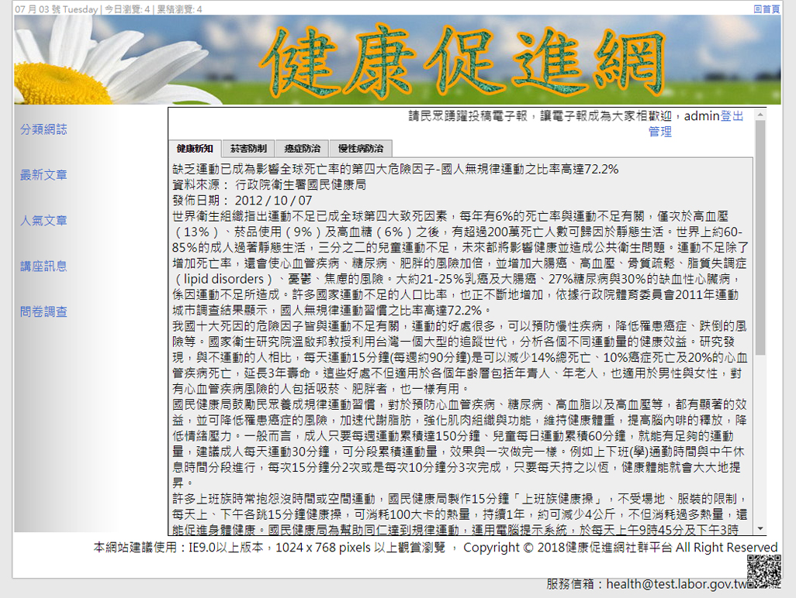
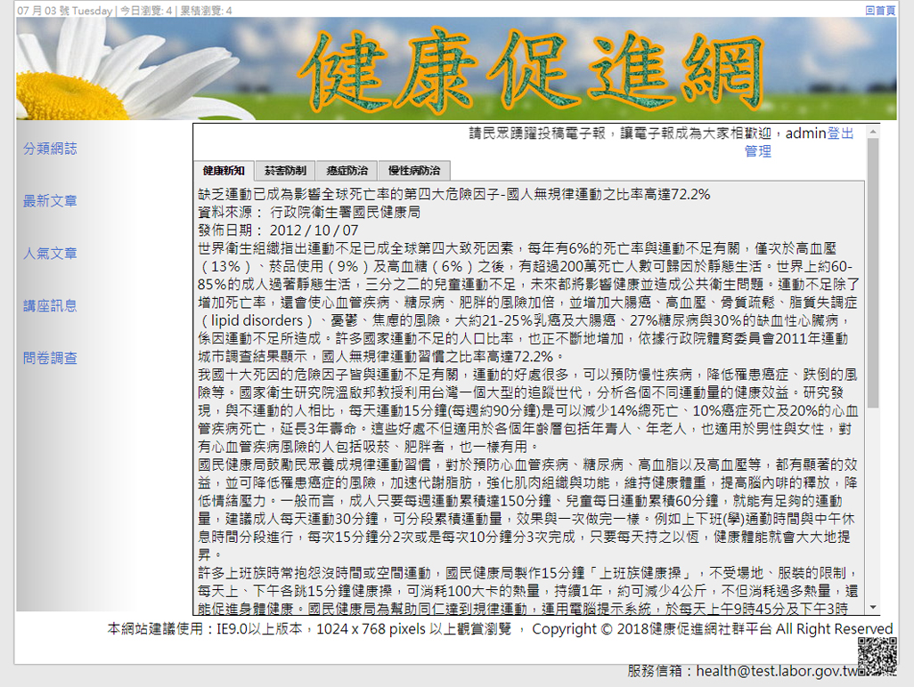

健康促進網
國家技術士網頁設計乙級檢定第二題 - 健康促進網 (17300-102202)
成品參考: https://bquiz.kento520.tw/finish/2/index.php
解題說明: https://rogeraabbccdd.github.io/bquiz02/
原始碼: https://github.com/rogeraabbccdd/bquiz02

國家技術士網頁設計乙級檢定第二題 - 健康促進網 (17300-102202)
成品參考: https://bquiz.kento520.tw/finish/2/index.php
解題說明: https://rogeraabbccdd.github.io/bquiz02/
原始碼: https://github.com/rogeraabbccdd/bquiz02
